In this lecture, I'd like to talk about ways that we can use computer simulation as a tool for understanding the brain. The suggested readings for this lecture were Chapters 2, 3, and 4 of "The Book of GENESIS: Exploring Realistic Neural Models with the GEneral NEural SImulation System" (Bower and Beeman, 1998) (commonly called "the BoG"). You can download or read the free internet edition at http://www.genesis-sim.org/GENESIS/iBoG/iBoGpdf. We won't have time to use the GENESIS simulator in this course during the short unit on realistic neural modeling, but I'll use slides and video clips of GENESIS simulations to illustrate some general ideas about this type of modeling.
The problem has been described as reverse engineering the brain (Bower, 1995). As an analogy, suppose that we found an alien computer that was recovered from a crashed UFO. We'd like to understand how it works and learn what we can of its advanced technology.
There are various approaches we might take, for example, the high level systems approach - we can treat it as a black box and identify its input/output relationships. This corresponds to the psychological approach: the study of "mind". But, sooner or later, we have to understand the hardware.
We can try some circuit tracing and try to construct a wiring diagram. Unless it is a primitive single layer circuit board, this is hard - we may get incomplete knowledge. If we're lucky, we might be able to get some logic analyzer probes into critical pathways and try to figure out something from the relationships between the different pulse trains that we see.
Another problem - we may not be able to identify the components - no data book! There is just this rather insulting sticker that says "No user serviceable parts inside".
So, we will have to understand what the components do and how they work before we can understand their role in the circuit. As much as possible, we would like to understand the operation of simple subcircuits, such as the clock generator before we understand the whole system. This reductionist approach is basically the one we take in trying to understand the nervous system. We try to understand how the parts work and what they do, in order to understand the system as a whole.
In the case of the brain, we have several tools available, each with its limitations:
The technique I'd like to talk about is biologically realistic computer simulation. This approach falls under the heading of "Computational Neuroscience", and it uses and complements information obtained from the techniques listed above. I'll give some examples of this approach in the simulations that I'll show in these lectures.
But, computational neuroscientists often disagree about the amount of biological realism that is required. Why make detailed biologically realistic models, rather than simpler abstract models that try to get right to the important behavior of the system of interest? The brain has trillions of neurons, with complicated branching dendrites, and dozens of different types of ion-selective channels. It's a natural reaction to fear that if we get too bogged down in the details, we'll spend years trying to understand calcium diffusion in dendrites, or the behavior of some esoteric type of channel, and never get to the goal of "modeling the brain".
It is tempting to make high-level abstract models without spiking neurons, hoping to discover some general principles of "how the brain computes". For example, some people use mathematical models that treat the cortex as a collection of coupled oscillators, or use greatly simplified neurons that sum up their inputs and produce a binary output based on some simple criterion.
The problem with these sorts of models is that with enough ingenuity and adjustable parameters, you can almost always construct a model with any given desired behavior. If you construct an artifical neural network that performs well at recognizing human faces, does this tell you anything about how your brain recognizes faces? If the model is detailed and biologically realistic, then experiments on the actual living system can greatly narrow down the choices that are made in creating the model.
There is another trap that it is easy to fall into when deciding to use computer models. An obvious way to use modeling is to construct a model that incorporates some particular hypothesis and do "computer experiments" on the model in order to see if it behaves like experiments on the biological system. If it does, you might claim that this is evidence in favor of your hypothesis. The trouble with this is that it suffers from some of the same problems as abstract models: the simulation may be just giving the results that it was designed to give, and you don't know if a different model might have done just as well. With enough assumptions and tweaking of parameters, there are lots of models that could generate reasonable agreement with experiment.
A better approach is to try to ignore your preconceived ideas about the cause of a particular behavior and try to build the best model of the system you are studying that you can. This means incorporating the best physiological data that you can get to model the system in detail. This often means modeling neurons down to fine details of dendritic structure, and modeling each kind of ion channel that is known to exist in the cell. This fosters a close relationship with experiment, because you will soon discover experiments that you need to do in order to get data to use to characterize some channel or membrane parameter.
Once you have done this, you often find that you have to fill in the gaps in your knowledge with some hypotheses. You might postulate some connections between neurons which you feel might be necessary; or the existence of some interneuron in order to provide a needed inhibitory input. Or, you might assume the existence of some type of ionic channel which has been observed in other types of neurons and which seem necessary to explain the behavior of the one you want to model. Then you use your simulation as a sort of breadboard to test out your ideas. If the new feature gives better agreement with experiment, then you have the motivation to perform experiments to see if it really exists.
Of course, there will always be some parameters that you have to estimate. Then you compare the behavior of the model with some "function-neutral" experiments like voltage or current clamp on a cell, or perhaps an electric shock to a nerve in a system. You can then "tune" the model by fitting any unknown parameters with data that isn't directly related to the behavior of interest. If the model passes these tests, then you can have more confidence in it. At this point you can start exploring the more interesting behavior of the model and understanding how the model produces this behavior. You can perform measurements and experiments on your model which might be impossible in the real system. Everything is accessible in a simulation. You can try to simplify your model in order to find out what features are important for the interesting behavior of the system - and which features are merely "icing on the cake".
You may discover that not only does the model behave like the biological system, but that the mechanisms that you postulated are causing that behavior. But it is just as interesting to find that there is another cause, or even to see behavior in the model that you never thought to look for. This can be another useful way to guide the direction of experiments. This kind of realistic modeling opens up a new way to discover, through "computer experiments" the way that neurons process information.
So, how do we model a real neuron like this pyramidal cell or a network composed of them in the hippocampus?
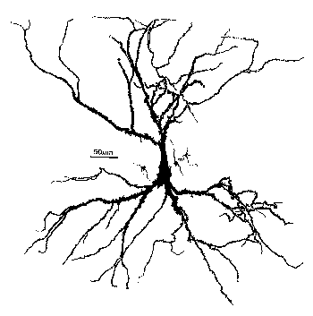
As you can see, it doesn't look much like the ones you see in treatments of artificial neural networks, where you have a little circle with a summation sign inside. There are extensive trees of dendrites with the apical dendrites at the top, and basal dendrites at the bottom. Other neurons make synaptic connections at various points on this structure, and release neurotransmitters that open channels, allowing ions to flow in or out of the cell, resulting in the production of post-synaptic potentials. It turns out that these dendrites play an important role in the processing of information by the cell. The pyramid shaped cell body, or soma, contains voltage activated sodium and potassium channels somewhat similar to those studied by Hodgkin and Huxley in the giant axon of the squid. Post-synaptic potentials produced in the dendrites can propagate to the soma to trigger action potentials. Throughout the cell, we also have passive channels that remain partly open all the time, leading to a leakage resistance. The insulating cell membrane separates the conductive cytoplasm inside the cell from the salt water environment outside, giving rise to a membrane capacitance. As the cytoplasm has some resistance, we also have an axial resistance along the dendrites and axon (not visible in this picture). Thus, a section of dendrite acts like a leaky cylindrical capacitor, coupled to neighboring sections with resistances.
In summary, we have a continuous distribution of resistance and capacitance across the membrane as well as an axial resistance parallel to the membrane. The various ion-selective channels across the membrane act like variable resistances.
The answer to our question is - we model it piece by piece. The usual approach is to model this with a lumped parameter model in which we divide the neuron into a finite number of compartments containing resistances, capacitances and batteries to represent ionic equilibrium potentials. We model this complex neuron with something like this.
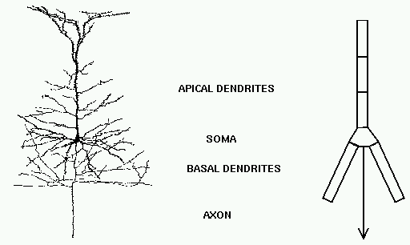
Each of these compartments has an equivalent circuit that we will see in a minute.
As a contrast to this simple model with just a few compartments, here is a model of a Purkinje cell from the cerebellum, constructed with the GENESIS simulator by De Schutter and Bower (1994). It has 4550 compartments and 8021 active conductances ("channels"). If you look closely, you can see that it is actually composed of many cylinders.
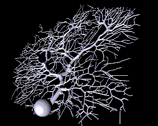
Why would one need to construct such a detailed model? One reason is that, if we ultimately want a simple model, it is better to throw out details after proving that they aren't significant, rather than just hoping that we didn't omit something important at the outset.
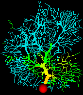
Sometimes this will lead to results that you wouldn't have expected. Here is an example from a computer simulation of the Purkinje cell, where false color is being used to represent the membrane potential throughout the cell. We can use this to find the effect of applying synaptic input at various places on the cell.
It has been assumed for many years that dendrites process information
"locally", and that very local spatial and temporal patterns of
activity sum, in some complicated way, to produce cell output. It was
believed that inputs far from the soma would have comparatively little
effect, because post-synaptic potentials would be greatly attenuated
as they pass through the axial resistance of the dentritic tree to the
soma.
Modeling the cerebellar Purkinje cell suggests that the dendrite is
actually operating globally - all regions of the
dendrite have equal access to the soma, not as is usual, regions
closer to the soma having a much larger influence. This comes about
because a type of calcium channel found in the dendrites (p-type),
amplifies granule cell inputs more at the distal dendrites than at
proximal dendrites. This process would be very hard to understand, or
even to predict, without a good computer model. It is also, with the
hindsight provided by the modeling results, what one would want to
have in a Purkinje cell that must receive and process as many as 100,000
synaptic inputs.
Here is a circuit diagram for a generic neural compartment.
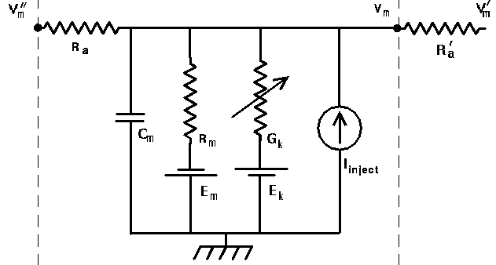
Vm represents the membrane potential at a point inside the compartment, relative to the "ground" symbol outside the cell. The membrane capacitance Cm can be charged or discharged as current flows into or out of the compartment, changing the value of Vm. This current can come from adjacent compartments, from the passage of ions through ion channels, or from a current Iinject through a probe injected into the compartment. Adjacent compartments have membrane potentials Vm' and Vm'', and the difference in potential across the axial resistances Ra and Ra' can cause current to enter or leave the compartment. The "leakage resistance" Rm and its associated equilibrium potential Em represent the passive channels, and the resistor with the arrow through it represents one of the possible variable conductances that are specific to a particular ion or combination of ions. By convention, these are represented by a conductance Gk, rather than a resistance, 1/Gk. Each one of these conductances has an associated equilibrium potential represented by the battery labeled Ek. The equilibrium potential (reversal potential) is the value of Vm at which there is no net flow of the ion through the conductance. Your textbook explains how these are calculated from the Nernst equation. Typically, there will be several of these variable resistances, with different conductances and equilibrium potentials, corresponding to the different types of channels in the compartment. For example, the area near the region of the soma called the "axon hillock" may contain voltage dependent sodium and potassium channels, and regions in the dendrites are likely to contain channels that are chemically activated from synaptic connections. The index k is being used here to represent one of these various types of conductances.
To model this on a computer, we just need to numerically solve a simple differential equation (DE) that you may have seen before in elementary circuits courses:
C(dV/dt) = I(in) - I(out)
for each compartment. i.e., the rate of change of the voltage across the capacitance is proportional to the net current that is applied to charge it.
The full equation that this circuit obeys can be easily derived from Ohm's law and the circuit diagram:
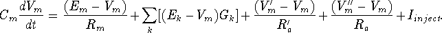
(You don't need to remember the equation, but take a minute to understand the origin of each of the terms, by comparing it to the diagram.)
Of course, the Vm'' and Vm' in the adjacent compartments affect the currents flowing into or out of the compartments, so we are solving many coupled DE's in parallel. Also, we will need good models for the way that the conductances vary with voltage, time or synaptic input. Usually, we can treat an axon as just a delay line for the propagation of action potentials, although it could also be modeled as a series of compartments if we were interested in understanding the details of axonal propagation.
Hodgkin and Huxley used this approach to model a single compartment representing a short piece of squid giant axon. Since they did their work in the early '50s, they used hand crank mechanical calculators for the numerical integrations. We have a lot better tools now, and can solve harder problems, but the technique is essentially the same. If you have some programming experience, it would be fairly simple for you to duplicate their model by writing a program in C, Java, or FORTRAN to solve the equations given in their papers. By using one of the freely available libraries for solving ordinary differential equations, you could even write your own neural simulator.
However, there are a lot of advantages to using a general purpose neural simulator and a high level simulation language, rather than writing your own simulation code in a computer programming language.
A lot of early neural modeling was done with SPICE - a general purpose simulator for electronic circuits. Now there are simulators that have been designed specifically for biologically realistic neural modeling.
These examples were created with GENESIS, which was developed specifically for this type of modeling. If you want to find out more about GENESIS, or to download it and run some simulations, you can check the GENESIS web page, http://www.genesis-sim.org/. The other popular simulator for this type of modeling is called NEURON, and is available from http://www.neuron.yale.edu.
During this lecture and the next one, we'll look at episodes from four different simulations. The first two are tutorial simulations designed to teach concepts in neuroscience, and the last two are GENESIS recreations of actual published research simulations.
Obviously, the place to start is with the Hodgkin-Huxley model. Their work, carried out in the early 1950's and described in a classic 1952 paper won them the Nobel Prize in 1963, and exemplifies a very good piece of modeling, combined with excellent experimental measurements. I can't emphasize this very necessary connection too strongly. Too many people get lost in a world of their own when doing computer modeling and lose touch with the world of experiment. Likewise, experimentalists may end up mindlessly gathering data without having a clear idea of how it will advance theoretical understanding.
Hodgkin and Huxley's model is at the basis of most single cell neuronal models. Most neurobiologists accept the importance of Hogkin and Huxley's work and their development of the voltage clamp technique without recognizing how important the modeling was to the work. Essentially, the model was what made them throw out their old way of looking at the changes in the membrane and introduce the new one. It is important to remember that at the time of their experiments, the modern concept of ion-selective channels controlling the flow of current through the membrane was only one of several competing hypotheses. Their model ruled out these alternative ideas, and also predicted the results of experiments that were not used in formulating the model.
Next, we will have a quick review of the Hodgkin-Huxley
model, and then illustrate the model with some simulations.
The Hodgkin-Huxley Model
The diagram below illustrates the ionic basis of the neuron membrane potential.
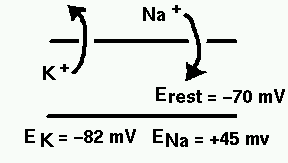
It is known that the concentration of sodium ions is greater outside the cell, so they have a tendency to enter. The concentration of potassium ions is greater on the inside, so they tend to leave. Metabolic processes within the cell called ionic pumps maintain this balance of concentrations. With this difference in ionic concentrations, the interior of the cell is polarized to a membrane potential of about 70 mV negative to the outside, when the cell is at rest. Because of the higher exterior concentration of sodium, it has an equilibrium potential (reversal potential) of about 45 mV positive with respect to the cell, meaning that it will tend to enter the cell as long as the membrane potential is less than ENa. Likewise, this competition between osmotic and electrostatic forces means that potassium will tend to leave unless the membrane potential falls below EK. Your textbook explains how these equilibrium potentials are calculated from the Nernst equation, and the rest potential from the Goldman-Hodgkin-Katz equation.
Hodgkin and Huxley quantitatively explained the process by which depolarization of the cell (an increase in Vm) causes Na-selective channels to open, allowing Na ions to enter. This raises the potential, further increasing the conduction of the Na channels, and causes the neuron to fire an action potential. Eventually, the Na channels inactivate, and K-selective channels begin to open, causing a flow of charge out of the cell, ending the action potential.
Now, let's look at the mathematical model that describes this behavior. As before, we start with a circuit diagram. In this case, it is for a piece of squid giant axon.
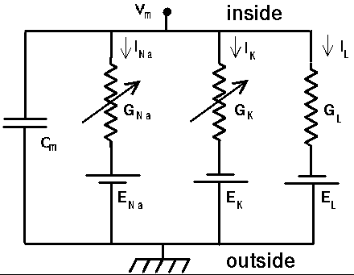
Each of these two conductances represents the average effect of the binary gating of many ion channels.
The equation for I(in) - I(out) is similar to the one for the "generic compartment", but this is an isolated compartment, representing a piece of axon with the ends tied off in a Petri dish, so nothing is coming in through Ra. We have also shown the two different variable conductances representing the sodium and potassium channels.
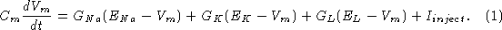
The hard part was to model the time and voltage dependence of the Na and K conductances. As you learned previously, their solution was to perform a series of voltage clamp experiments measuring both the total current and the current when the Na conductance was disabled. They did this with an injection probe and a recording probe, and a feedback circuit to insure that the injection probe applied just the right amount of current to hold the membrane potential at the desired value. They eliminated the sodium current by replacing the sea water with a solution containing choline instead of sodium chloride. Modern experiments use a puffer fish neurotoxin, tetrodotoxin (TTX) to block the sodium channels.
By performing the experiments with different values of the clamp voltage, they were able to determine the time dependence and equilibrium value of the conductances at different voltages. Here's a figure from one of their 1952 papers that shows the behavior of the K conductance when the voltage is stepped to 25 mV above the rest potential and then brought back down to the rest potential. For different clamping voltages, they found different values of the maximum conductance, and different time behaviors.
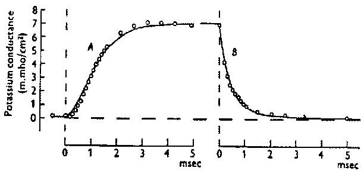
It would be tempting to fit the rise and fall of the conductance to an exponential function of time, but the experimental measurements were best fitted by an exponential to the fourth power. They were able to fit the K conductance to an equation of the form
Where n is called the "activation variable" and has a simple exponential dependence governed by a single time constant, 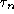 :
is called the "steady state activation", i.e., the value reached by n when the membrane is held at a potential V for a long time. Hodgkin and Huxley were able to fit the voltage dependence of and to an analytic function of voltage involving exponentials.
The tricky part is that when we are dealing with action potentials rather than a voltage clamp, and are changing with the changing voltage, so we can't use this equation for n. Instead, we have to use a differential equation that has this solution when V is constant,
This makes things pretty hard if you are cranking out the numerical solution step by step on a calculator, but it's no big deal to solve on a computer. It is just one more simple DE to solve numerically.
Their fit for the Na conductance was a little different, because they found that at a fixed voltage, the conductance rose with time and then decreased, so they had to fit it to a product
Here, m is the activation variable for Na, and h is called the "inactivation variable" since it becomes smaller when m becomes larger. The terminology is a little confusing though, because the conductance is large when the "inactivation" is large. m and h obey equations just like the ones for n, but their steady state values and time constants have different voltage dependences. If you would like more information about the details of the model, see the optional material on Details of the Hodgkin-Huxley Model.
Let's examine the results of a simulation now, and see what we can learn from a voltage clamp experiment. Keep these equations for the sodium and potassium conductances in mind while watching the simulation.
We hold the membrane potential at the resting potential for 10 msec, and then rapidly raise it to 50 mV above the rest potential, holding it for 20 msec before returning it to the rest potential. I should point out that in this particular simulation, we measure voltages with respect to the resting potential, so we define the rest potential to be 0 volts, rather than -70 mV.
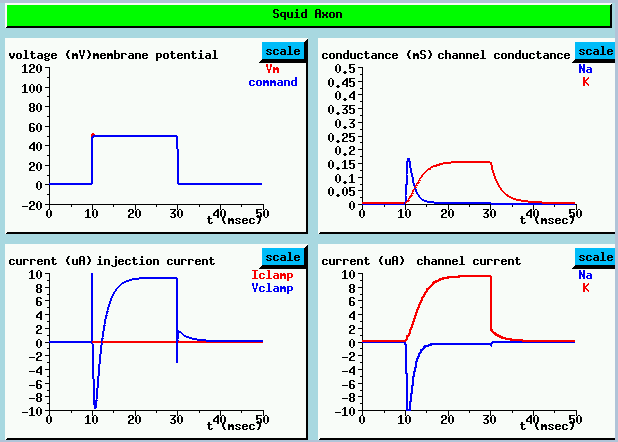
UPPER LEFT shows the both the "command voltage" which is applied to the voltage clamp circuitry and the resulting membrane potential. A step from the resting potential (defined to be 0 mV) to 50 mV is applied after 10 msec.
LOWER LEFT plot shows the injection current used to maintain this voltage. The very sharp initial spike is due to the large current needed to quickly charge the membrane capacitance to the clamp voltage. It is followed by an inward Na current, shown as a negative current here, then an outward K current.
The channel conductance plots at the UPPER RIGHT reveal a rapid rise in the Na conductance, followed by a slower decay as it becomes inactivated. The K current has a much slower activation and no inactivation. It doesn't decay until the voltage is dropped back to zero. These conductance changes result in the channel currents shown in the LOWER RIGHT plots. As the Na equilibrium potential is greater than the resting potential, the Na current flow is inward (negative). The superposition of these two currents, plus the initial capacitive current give the injection current. (LOWER LEFT)
In an actual experiment, we would measure currents directly, separating the K current from the total current by blocking or disabling the Na current. We would then be able to calculate the conductances which we have plotted here. In the simulation, we do it the other way around.
From these, we can calculate the behavior of the channel activation and inactivation parameters. The simulation lets us see something which we can't observe directly by experiment. We can bring up a window to show these parameters directly.
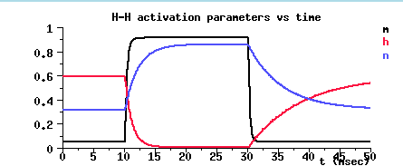
Notice the value of m³ at the resting potential, and the time behavior during the steps to 50 mV and back down to rest.
Initially, there is a balance between the inward Na current, the outward K current, and the leakage current. At the resting potential m (black) is small, and h (red) is fairly large, so m³h is small, but non-zero. The K activation n (blue) is moderate in size, but is also small when raised to the 4th power.
At the start of the voltage pulse, the depolarization causes m to increase as the Na channels open. After about 2 msec, the Na conductance inactivates and h decreases. While this is happening, the K conductance activates and n increases, leveling off to a steady value.
At the end of the pulse, n steadily declines towards its resting value, the Na activation rapidly drops to its original value, and the inactivation slowly returns to its original value.
The important thing to keep in mind when we analyze the results of other experiments that we will do with this simulation is the different time constants for the activation and inactivation parameters. The sodium inactivation and the potassium activation take much longer to reach their steady state values than the sodium activation gate.
They key to understanding the behavior that you'll see in the next two simulation runs is to keep in mind the way that the steady state values of the activation and inactivation variables depend on voltage, and the relative magnitudes of their time constants for reaching steady state. In an experiment, we would measure the currents and use them to calculate the steady state values of these activation variables at a particular voltage step, and the time constants for reaching these values. If we performed voltage clamp experiments to many different voltages, we would get plots like this:
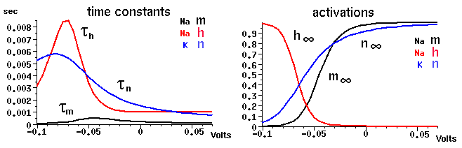
Notice that although the time constants depend a lot on voltage, the time constant for the Na activation variable m is about an order of magnitude less than that for the Na inactivation h and the K activation n throughout the entire range. This means that during an action potential, when the voltage is high and m is large, and h is supposed to be small, it will take a while for h to decrease. Also, it will take n a while to become large and contribute to the opposing K current. If it weren't for the slower behavior of h, m³h would be close to zero after the start of depolarization and it would never be large enough for an action potential to form.
Also, note the values of these parameters at the rest potential (about -70 mV).
So far we haven't done anything very imaginative with the computer simulation. We've simply used it to reproduce the experimental results that went into the model. This isn't the point of computer modeling, and you shouldn't be too impressed with what you have seen so far. The goal is to use your simulation to learn something new about the system. A good model should be able to predict experimental results that weren't used to create the model. Hodgkin and Huxley's reconstruction of the action potential during a depolarizing current injection is a more impressive test of the model. An even more interesting experiment is the one we will do now in order to understand what goes on during post-inhibitory rebound.
Instead of applying a depolarizing pulse of current injection, let's do a simulation of post-inhibitory rebound by giving a brief hyperpolarizing current pulse of -0.1 µA. We'll apply it after 10 msec and hold it for 20 msec. What behavior do you expect?
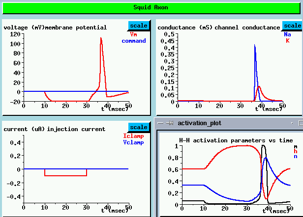
The plot of the membrane potential (UPPER LEFT) shows the typical curve for charging a capacitor with a negative current during the hyperpolarizing pulse. It starts to discharge at the end of the pulse, but instead of leveling off to the resting potential, we see a full blown action potential, followed by hyperpolarization and then a return to the rest potential.
The channel conductance plots (UPPER RIGHT) show the conductances that we associate with an action potential - there is a sharp peak in Na conductance, followed by a broader delayed peak in the K conductance. This causes an outward flow of current which terminates the action potential and causes the hyperpolarization. Many people find this result surprising. How can an inhibiting (hyperpolarizing) current produce an action potential?
The plot of the activation and inactivation parameters (LOWER RIGHT) helps us understand what is happening. Before the hyper polarizing pulse, the steady state resting potential value of the Na activation parameter m is fairly low. The inactivation parameter h is moderately high, but the conductance is proportional to m³h, so it is small and not much Na current flows into the compartment. n is small (about 0.35), so n to the 4th power is relatively small, and there is a slight K current in the opposite direction of the Na current.
From 10 to 30 msec, during the pulse, the cell becomes hyperpolarized, so m gets even smaller, becoming essentially zero, and h increases. The result is that the Na current is nearly zero.
At 30 msec, when the pulse has ended, the Na activation parameter m rapidly starts to increase towards its original value. However, when it gets there, h is still very large, because of its much larger time constant to reach its final value. This causes an increase in the Na conductance, which raises the membrane potential and allows m to increase even more. Near the peak of the action potential, h has finally decreased and the K activation parameter n (in blue) has built up, so the action potential ends. The large value of n, and the resulting outward K current, accounts for the hyperpolarization following the action potential.
We'll do another current clamp experiment, but this time, we'll give a sequence of 2 msec depolarizing pulses at 20 msec intervals.
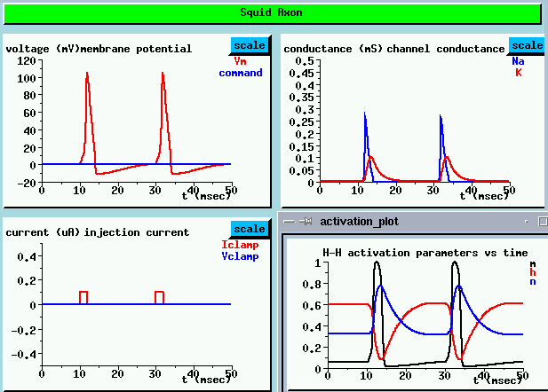
As we might expect, the plot of the membrane potential (UPPER LEFT) shows that each pulse charges up the membrane capacitance to a value above the threshold for producing an action potential.
If we look at the behavior of the activation and inactivation parameters between pulses, we get an idea of what might happen if we applied pulses at shorter intervals (LOWER RIGHT). Shortly after the end of the action potential, the Na activation parameter rapidly decreases to near its resting potential value. But, the inactivation parameter h is still very low and the K activation parametern is fairly high. It takes about another 10 msec before they get back to their original values. This interval is called the refractory period. So what would happen if we applied another pulse during the refractory period? Imagine what would happen if the pulses were at 5 msec intervals. Not only would it be hard to get enough Na conductance to raise the membrane potential above threshold, but there would be a large K current in the opposite direction, tending to keep the cell depolarized. We can test this theory by increasing the interval between pulses to 5 msec.
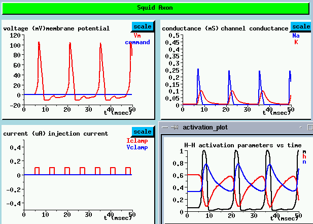
Look at the membrane potential (UPPER LEFT)
As we expected, we only get an action potential every 10 msec, not every 5. There is a slight rise in the membrane potential in between the firings, but it isn't enough to cause an action potential. This gives rise to accomodation - if we hit it with a larger depolarizing pulse, we might get an action potential.
Next lecture Return to the main page
Index of Lectures on Computational Neuroscience